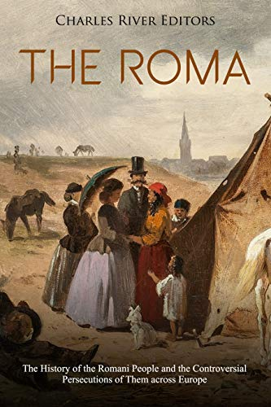

Echoes of Romani Narratives: A Literary Journey
Romani people are an ethnic minority group but they have a rich and complex history and culture. They are famous for their bright color clothes. They are also known as gypsies. There are a lot of things that need to be clarified regarding the origin of Romani people in India. They support linguistics, genetics, and culture as same as India. By understanding their language and culture we defined them as they migrated from the centre of India to northern India. After their diaspora from India, they migrated towards Greece. After this, they spread into Europe. The lexicon (vocabulary of the Romani language) is similar to some Greek words. They show the socio-cultural institutions and traditions of India. Research also shows that some Romani people share their genetic markers with some northern people of India. After India, they spread over the Greeks. Some similar words are found in the Greek language in the lexicon which shows the relation between the Greek and Romani people.
Most of the connections are in fever to show the Indianess of Romani people, the language also plays an important role in it. The Romani language is also an Indo-Aryan language. there are many words taken from Persia more than Armenia in lexicon the vocabulary of Romani people. But it is not right that they lived in Persia more than Armenia, there are some economic relations among them there are no linguistic relations more than Armenia people with Persian people. These people believe in different religions. Some of them have beliefs in Christianity, Hinduism, and Islam but some of them do not follow them at all. The religious practices of Indians have greatly influenced the development of various religious beliefs.
When we talk about discrimination, it is a major issue faced by many people, especially the Romani community who are often targeted unfairly. People are being victimized due to the nationalization of others. Many people do this to migrate to avoid assimilation and that is why they are afraid to become part of any particular society. Unfortunately, this decision can also lead to recent challenges such as poverty, social marginalization, and discrimination. These are the tough issues in society. This can be improved with the support of society and the positive thoughts of people. Dom is a caste that belonged to India. Dom means a man of the Dalit caste. Those live their life by singing and dancing. Currently, these individuals are located in India. Some of them are dancers, musicians, workers, etc. This caste is not linguistic or ethnic as well. These people are present in the west of India like Iran, Pakistan, and Europe. Dalit is used for those who are untouchables. This can be the reason behind the minority and discrimination against the Romani people at present. Today also the Romani people are famous for their art and crafts and weaving of baskets in Europe. They have come to stay primarily because of their economic conditions. They adopt these skills in India to improve their economic conditions. As they are migratory people in the past they had some other passion for living their life in a difficult situation.
The Romani community is proficient in creating literature that effectively depicts their cultural heritage and history. They are famous for their romanticized literature. On the other hand, western countries observe the literature as having more misconceptions about the Romani people. This was the time of the Benzatime empire. The group of Athingani is one of the population of that empire. This one is equated with Roma by some researchers. They relate these people with Romas with the caste system in India. The Greek word Athingani means those who don't want to touch others. At that time this term is popular in India. In some research, the first time this word was found in a religious text. They used this word for those who tell fortune and arrange ceremonies. It demonstrates how two words from different origins can have similar meanings. The most famous and important thing is the photography and their paintings. Nowadays, the Romani paintings are more popular in all over the world. They fill some colors to show the real thing in front of the audience.
The deterritorialization of the Romani people was described based on their history, cultural adaptions, and experience as a global diasporic community. Linguistic and cultural anthropology played an important role in the development. Romani people lived in a nomadic lifestyle. They face more struggles in their diaspora. While migrating from one place to another, they were always willing to take the culture of their new surroundings.
References:
1.
http://en.wikipedia.org/wiki/History_of_the_Romani_people
2. Bury Me Standing: The Gypsies and Their Journey (book)
3. Fraser, Angus (1992) The Gypsies. Oxford / Cambridge: Blackwell |
Gilsenbach, Reimar (1994) Weltchronik der Zigeuner, Teil 1.
Frankfurt am Main: Peter Lang | Hübschmannová, Milena (1972) What
can Sociology suggest about the Origin of Roms. In: Archiv
orientální 40/1, pp. 51-64 | Kenrick, Donald (2004) Gypsies: from
the Ganges to the Thames. Hatfield: University of Hertfordshire
Press | Kenrick, Donald / Taylor, Gillian (1998) Historical
Dictionary of the Gypsies (Romanies). Lanham: The Scarecrow Press |
Matras, Yaron (2002) Romani. A Linguistic Introduction. Cambridge:
Cambridge University Press
4. Image Source:
The
Roma people are believed to trace their origin to nomadic
communities like the Dom, Banjara, Gujjar, Sansi, Chauhan, and
Sikligar from the North West parts of India.
{kind=link}